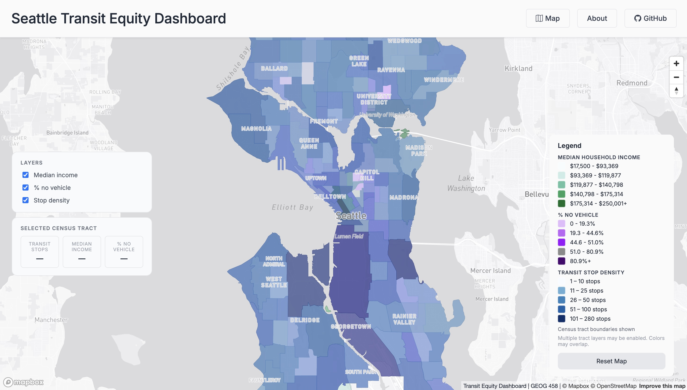

GIS · Web Mapping · Jan 2026 – Present
Seattle Transit Equity Dashboard
Buffer and spatial join analysis evaluating census tract proximity to high-frequency transit stops across King County. Integrated transit route, stop frequency, and ACS demographic datasets into an interactive web dashboard.